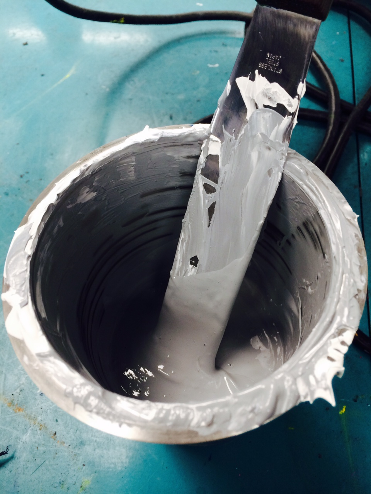

Ink Mixing.
Grab your pantone book or formula from your mixing system and get ready. Be sure you have your cup, spatula, and all necessary mixing inks. Remember to clean your spatula between adding each new ink to avoid cross contamination. If you are mixing to formula in grams be sure you have a reliable digital scale. You can also mix by eye, and certain pantone books will have mixing percentages as well.
Here is some further reading regarding the properties of discharge and plastisol inks.
